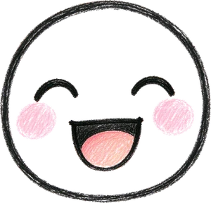
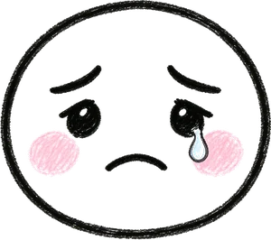

我的成长
情绪、对话、测评和打卡都在这里，按时间排成一条线。
这一周
再记两天，解锁「连续 7 天」徽章。
- 24条情绪日记
- 9次 AI 对话
- 2次成长测评
最近发生的事
情绪 + 对话 + 测评 + 打卡
-

心情打卡 · 开心
「今天把那章背完了，居然有点想笑。」——AI 回应：这份轻松是你自己挣来的。
-
AI 对话 · 第 9 次
四步走到第三步（资源），留下一张行动卡：睡前把明天要做的三件事写下来。
-
成长测评 · 第 2 次
关系 61 分（比上月 +4），情绪 68 分（+6），其余三项基本持平。
-

心情打卡 · 低落
「说不清为什么，就是提不起劲。」
-
拿到一枚章 · 教练首谈
和知夏完成了第一次 50 分钟的会面。


时间轴内容为示例数据，接入后来自你的真实记录。